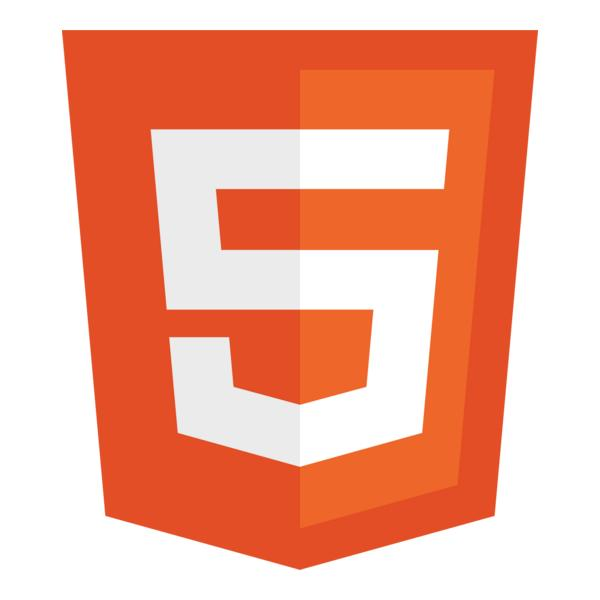
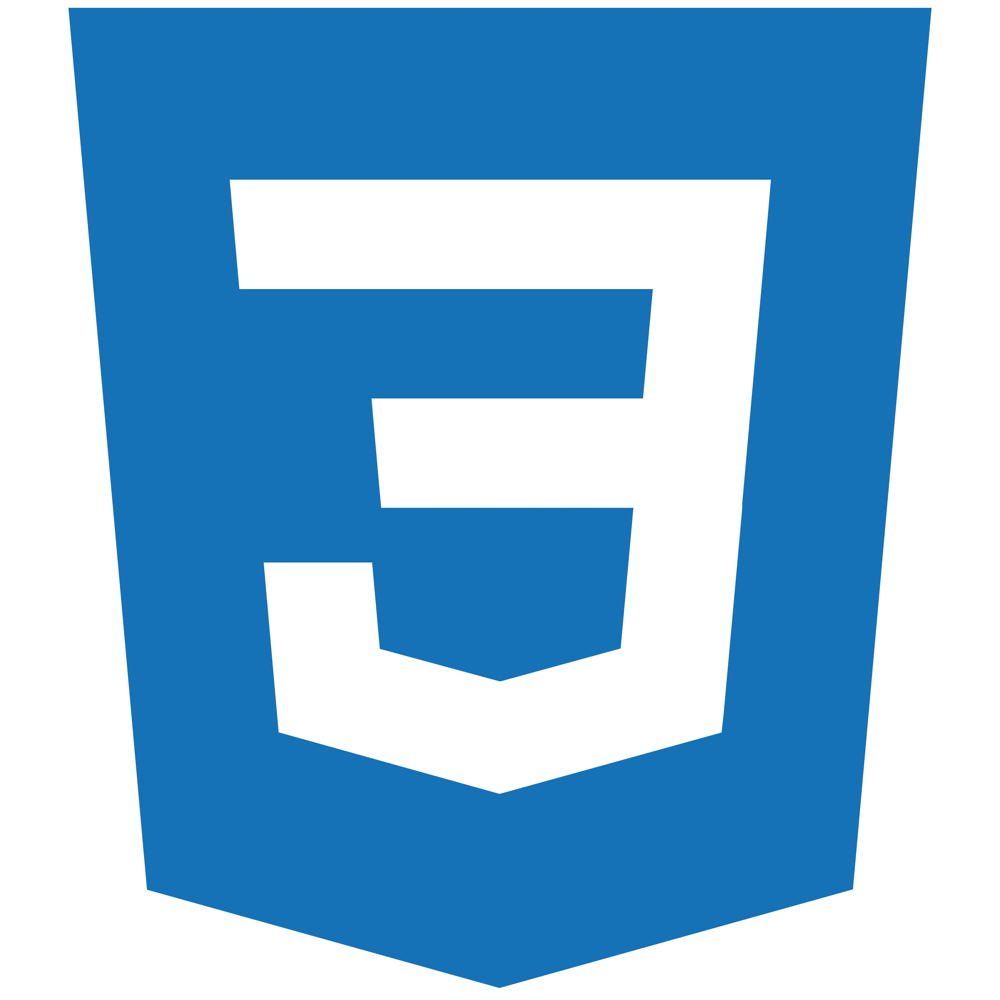
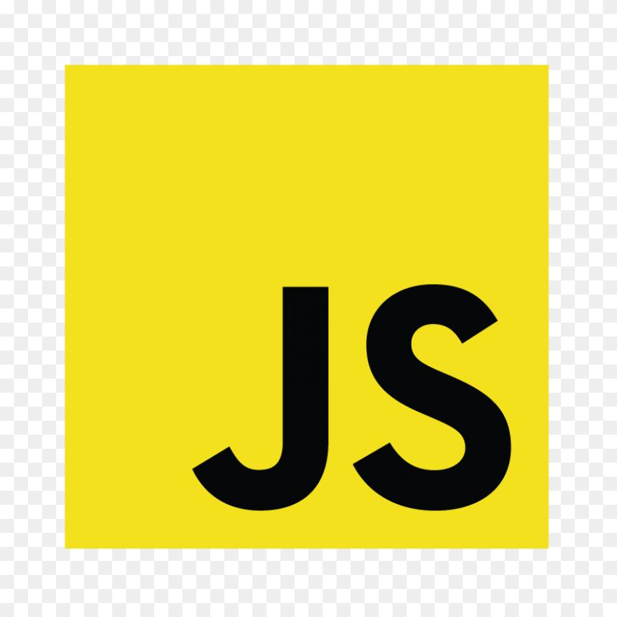
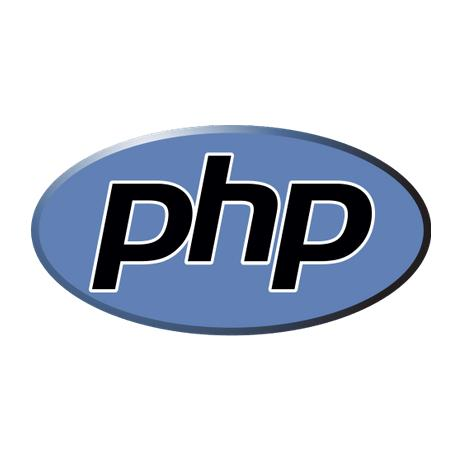
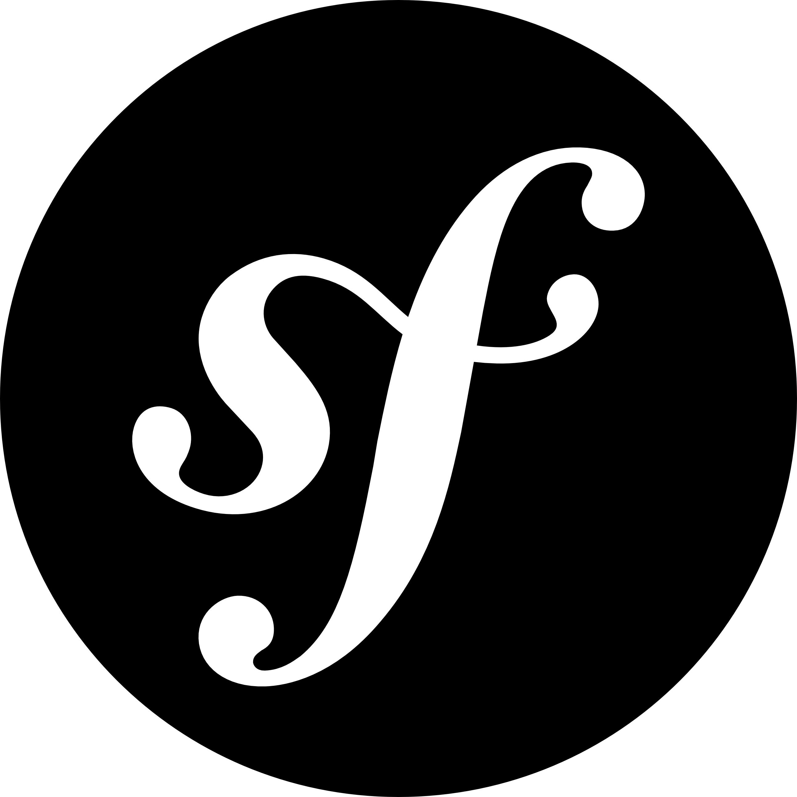
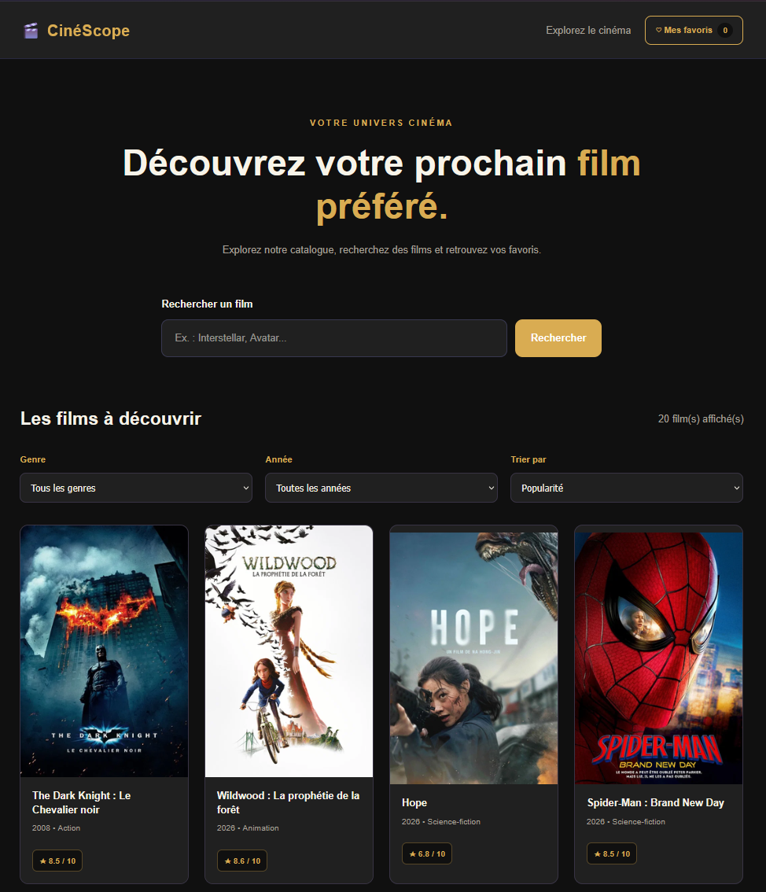

Expérience professionnelle
+ de 20 ans dans le secteur automobile
Une solide expérience qui m'a apporté rigueur, autonomie et sens du travail en équipe.
Bienvenue sur mon portfolio
Passionné par le développement web, je suis actuellement en reconversion professionnelle après plus de 20 ans d'expérience dans le secteur automobile. Je recherche un stage pour mettre mes compétences en pratique et continuer à apprendre.
Je m'appelle François Kosnansky. Je suis actuellement en formation Développeur Web et Web Mobile (DWWM).
Après plus de 20 ans d'expérience dans le secteur automobile, j'ai décidé de me reconvertir professionnellement pour me consacrer à ma passion pour l'informatique.
Curieux et motivé, je développe mes compétences en HTML, CSS, JavaScript, PHP et WordPress à travers différents projets.
Mon expérience professionnelle m'a apporté rigueur, autonomie, adaptabilité et esprit d'équipe.
Je recherche actuellement un stage en développement web pour mettre mes compétences en pratique et continuer à apprendre.
Une solide expérience qui m'a apporté rigueur, autonomie et sens du travail en équipe.
Une formation pour concevoir et développer des applications web modernes et responsives.
Mettre mes compétences en pratique, découvrir le milieu professionnel du développement web et continuer à progresser.
Les technologies que j'utilise pour concevoir et développer des sites et applications web modernes et responsives.

Structure et sémantique des pages web.
Structure HTML
Mise en forme, Flexbox, Grid et interfaces responsives.
Responsive design
Dynamisme et interactivité des pages web.
DOM et événements
Développement côté serveur et traitement des données.
Back-end
Découverte du framework PHP pour développer des applications web.
Framework PHPCréation et personnalisation de sites web.
CMSDécouvrez les applications que je prévois de réaliser pour mettre en pratique mes compétences en développement web.
Une application pour ajouter, modifier, terminer et supprimer des tâches au quotidien.
Une application permettant de rechercher une ville et de consulter sa météo grâce à une API.

CinéScope est une application web permettant de découvrir des films grâce à l'API TMDB, de rechercher des titres, de filtrer les résultats, de consulter des fiches détaillées et d'enregistrer ses films favoris.
Après plus de 20 ans dans le secteur automobile, j'ai choisi de me reconvertir dans un domaine qui me passionne : le développement web.
Mon expérience dans le secteur automobile m'a permis de développer des qualités essentielles : rigueur, autonomie, adaptabilité et esprit d'équipe.
Aujourd'hui, je suis une formation DWWM pour apprendre à concevoir et développer des sites et applications web.
Je développe mes compétences en HTML, CSS, JavaScript, PHP, Symfony et WordPress à travers des projets pratiques.
Je recherche actuellement un stage en développement web pour mettre mes connaissances en pratique, participer à des projets concrets et continuer à progresser auprès de professionnels.
Vous recherchez un stagiaire motivé en développement web ? Je serais ravi d'échanger avec vous.
Actuellement en formation Développeur Web et Web Mobile, je recherche un stage pour mettre mes compétences en pratique et participer à des projets concrets.